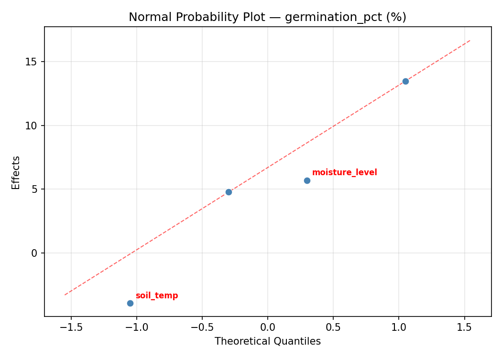
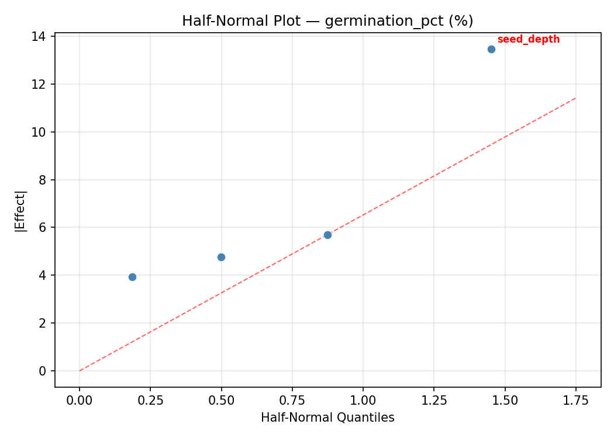
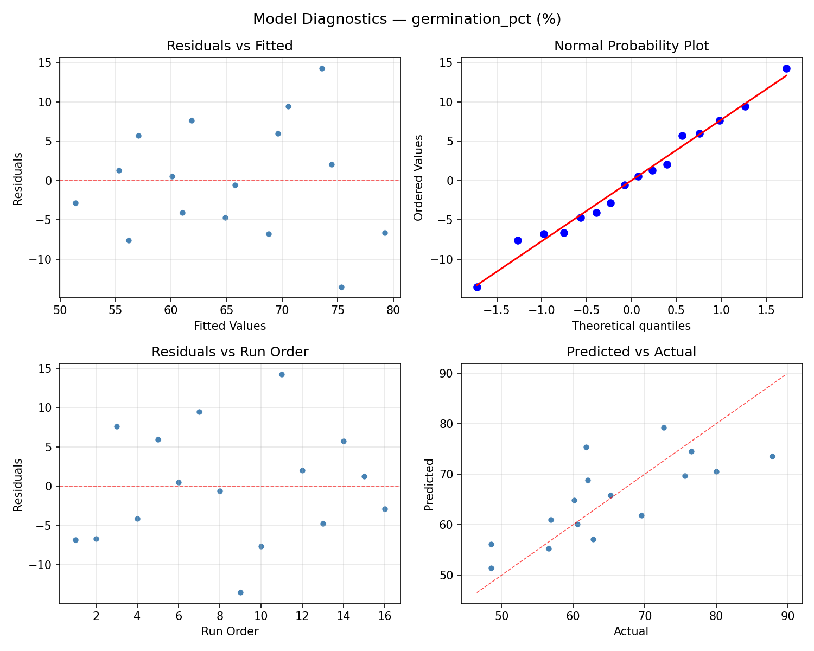
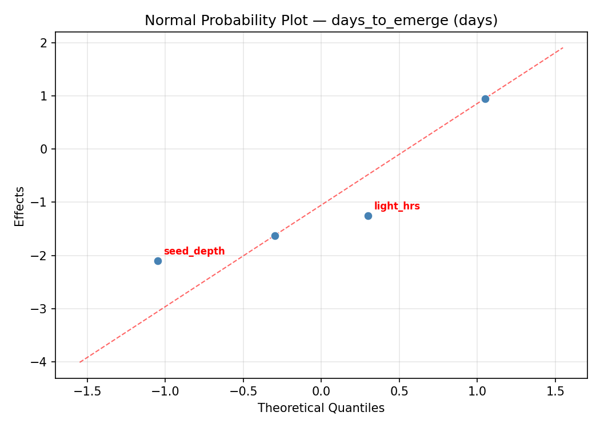
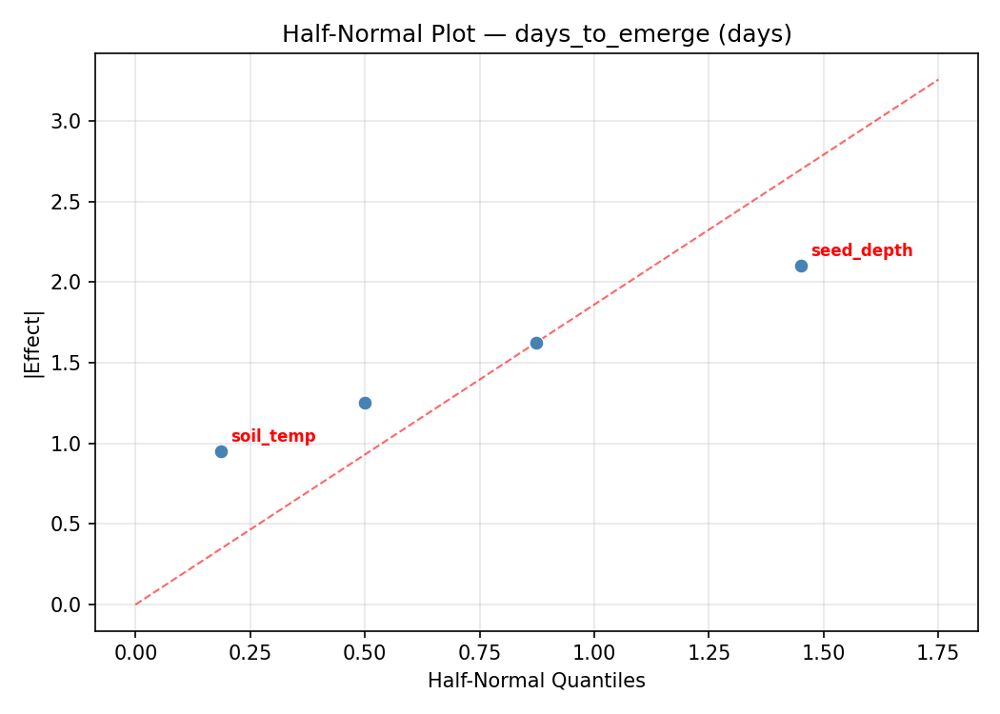
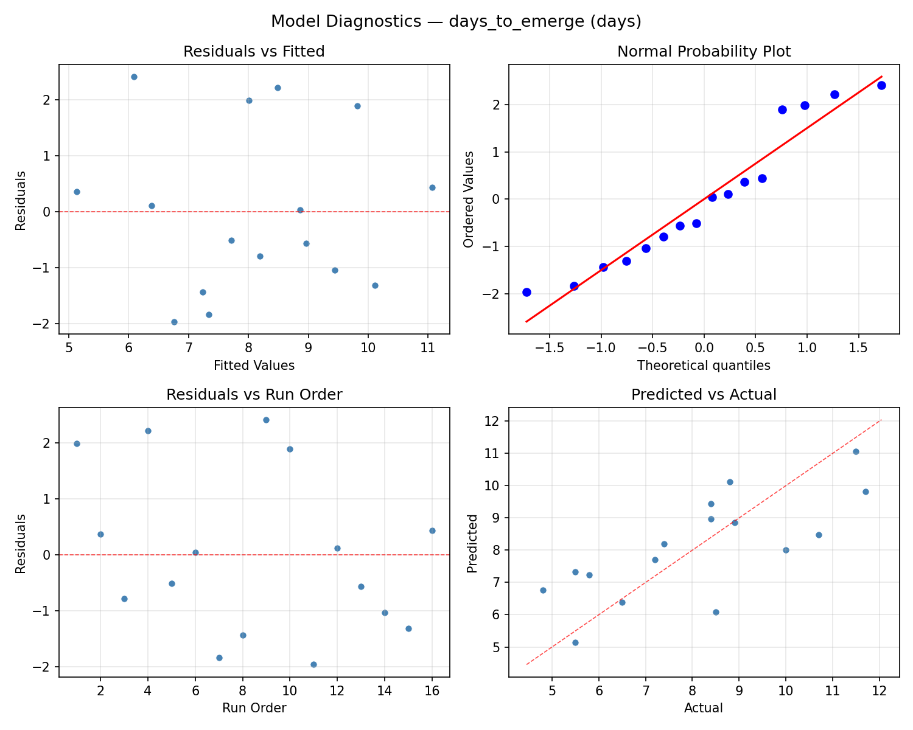

Summary
This experiment investigates seed germination rate. Full factorial of soil temperature, moisture level, seed depth, and light exposure to maximize germination percentage and minimize days to emergence.
The design varies 4 factors: soil temp (C), ranging from 15 to 28, moisture level (%), ranging from 30 to 70, seed depth (mm), ranging from 5 to 25, and light hrs (hrs), ranging from 8 to 16. The goal is to optimize 2 responses: germination pct (%) (maximize) and days to emerge (days) (minimize). Fixed conditions held constant across all runs include seed variety = lettuce, medium = potting_mix.
A full factorial design was used to explore all 16 possible combinations of the 4 factors at two levels. This guarantees that every main effect and interaction can be estimated independently, at the cost of a larger experiment (16 runs).
Quadratic response surface models were fitted to capture potential curvature and factor interactions. The RSM contour plots below visualize how pairs of factors jointly affect each response.
Key Findings
For germination pct, the most influential factors were soil temp (48.9%), moisture level (38.2%), seed depth (11.4%). The best observed value was 87.8 (at soil temp = 15, moisture level = 30, seed depth = 5).
For days to emerge, the most influential factors were soil temp (38.9%), seed depth (27.8%), moisture level (25.0%). The best observed value was 4.8 (at soil temp = 15, moisture level = 30, seed depth = 5).
Recommended Next Steps
- Consider whether any fixed factors should be varied in a future study.
Experimental Setup
Factors
| Factor | Low | High | Unit |
|---|
soil_temp | 15 | 28 | C |
moisture_level | 30 | 70 | % |
seed_depth | 5 | 25 | mm |
light_hrs | 8 | 16 | hrs |
Fixed: seed_variety = lettuce, medium = potting_mix
Responses
| Response | Direction | Unit |
|---|
germination_pct | ↑ maximize | % |
days_to_emerge | ↓ minimize | days |
Configuration
{
"metadata": {
"name": "Seed Germination Rate",
"description": "Full factorial of soil temperature, moisture level, seed depth, and light exposure to maximize germination percentage and minimize days to emergence"
},
"factors": [
{
"name": "soil_temp",
"levels": [
"15",
"28"
],
"type": "continuous",
"unit": "C"
},
{
"name": "moisture_level",
"levels": [
"30",
"70"
],
"type": "continuous",
"unit": "%"
},
{
"name": "seed_depth",
"levels": [
"5",
"25"
],
"type": "continuous",
"unit": "mm"
},
{
"name": "light_hrs",
"levels": [
"8",
"16"
],
"type": "continuous",
"unit": "hrs"
}
],
"fixed_factors": {
"seed_variety": "lettuce",
"medium": "potting_mix"
},
"responses": [
{
"name": "germination_pct",
"optimize": "maximize",
"unit": "%"
},
{
"name": "days_to_emerge",
"optimize": "minimize",
"unit": "days"
}
],
"settings": {
"operation": "full_factorial",
"test_script": "use_cases/99_seed_germination/sim.sh"
}
}
Experimental Matrix
The Full Factorial Design produces 16 runs. Each row is one experiment with specific factor settings.
| Run | soil_temp | moisture_level | seed_depth | light_hrs |
|---|
| 1 | 15 | 70 | 25 | 16 |
| 2 | 28 | 30 | 5 | 16 |
| 3 | 15 | 70 | 5 | 16 |
| 4 | 15 | 70 | 25 | 8 |
| 5 | 28 | 70 | 25 | 8 |
| 6 | 28 | 30 | 25 | 8 |
| 7 | 28 | 70 | 5 | 8 |
| 8 | 28 | 30 | 5 | 8 |
| 9 | 15 | 30 | 5 | 16 |
| 10 | 15 | 30 | 25 | 8 |
| 11 | 28 | 70 | 5 | 16 |
| 12 | 28 | 70 | 25 | 16 |
| 13 | 15 | 70 | 5 | 8 |
| 14 | 28 | 30 | 25 | 16 |
| 15 | 15 | 30 | 5 | 8 |
| 16 | 15 | 30 | 25 | 16 |
Step-by-Step Workflow
1
Preview the design
$ python doe.py info --config use_cases/99_seed_germination/config.json
2
Generate the runner script
$ python doe.py generate --config use_cases/99_seed_germination/config.json \
--output use_cases/99_seed_germination/results/run.sh --seed 42
3
Execute the experiments
$ bash use_cases/99_seed_germination/results/run.sh
4
Analyze results
$ python doe.py analyze --config use_cases/99_seed_germination/config.json
5
Get optimization recommendations
$ python doe.py optimize --config use_cases/99_seed_germination/config.json
6
Multi-objective optimization
With 2 competing responses, use --multi to find the best compromise via Derringer–Suich desirability.
$ python doe.py optimize --config use_cases/99_seed_germination/config.json --multi
7
Generate the HTML report
$ python doe.py report --config use_cases/99_seed_germination/config.json \
--output use_cases/99_seed_germination/results/report.html
Features Exercised
| Feature | Value |
|---|
| Design type | full_factorial |
| Factor types | continuous (all 4) |
| Arg style | double-dash |
| Responses | 2 (germination_pct ↑, days_to_emerge ↓) |
| Total runs | 16 |
Analysis Results
Generated from actual experiment runs using the DOE Helper Tool.
Response: germination_pct
Top factors: soil_temp (48.9%), moisture_level (38.2%), seed_depth (11.4%).
ANOVA
| Source | DF | SS | MS | F | p-value |
|---|
| Source | DF | SS | MS | F | p-value |
| soil_temp | 1 | 470.8900 | 470.8900 | 5.353 | 0.0686 |
| moisture_level | 1 | 287.3025 | 287.3025 | 3.266 | 0.1305 |
| seed_depth | 1 | 25.5025 | 25.5025 | 0.290 | 0.6134 |
| light_hrs | 1 | 0.4900 | 0.4900 | 0.006 | 0.9434 |
| soil_temp*moisture_level | 1 | 49.0000 | 49.0000 | 0.557 | 0.4890 |
| soil_temp*seed_depth | 1 | 0.3600 | 0.3600 | 0.004 | 0.9515 |
| soil_temp*light_hrs | 1 | 208.8025 | 208.8025 | 2.374 | 0.1840 |
| moisture_level*seed_depth | 1 | 297.5625 | 297.5625 | 3.383 | 0.1253 |
| moisture_level*light_hrs | 1 | 27.0400 | 27.0400 | 0.307 | 0.6032 |
| seed_depth*light_hrs | 1 | 7.2900 | 7.2900 | 0.083 | 0.7850 |
| Error | 5 | 439.8175 | 87.9635 | | |
| Total | 15 | 1814.0575 | 120.9372 | | |
Pareto Chart

Main Effects Plot

Normal Probability Plot of Effects

Half-Normal Plot of Effects

Model Diagnostics

Response: days_to_emerge
Top factors: soil_temp (38.9%), seed_depth (27.8%), moisture_level (25.0%).
ANOVA
| Source | DF | SS | MS | F | p-value |
|---|
| Source | DF | SS | MS | F | p-value |
| soil_temp | 1 | 17.6400 | 17.6400 | 5.468 | 0.0665 |
| moisture_level | 1 | 7.2900 | 7.2900 | 2.260 | 0.1931 |
| seed_depth | 1 | 9.0000 | 9.0000 | 2.790 | 0.1557 |
| light_hrs | 1 | 0.8100 | 0.8100 | 0.251 | 0.6376 |
| soil_temp*moisture_level | 1 | 7.2900 | 7.2900 | 2.260 | 0.1931 |
| soil_temp*seed_depth | 1 | 0.3600 | 0.3600 | 0.112 | 0.7519 |
| soil_temp*light_hrs | 1 | 4.4100 | 4.4100 | 1.367 | 0.2950 |
| moisture_level*seed_depth | 1 | 6.2500 | 6.2500 | 1.937 | 0.2227 |
| moisture_level*light_hrs | 1 | 0.2500 | 0.2500 | 0.077 | 0.7919 |
| seed_depth*light_hrs | 1 | 0.4900 | 0.4900 | 0.152 | 0.7128 |
| Error | 5 | 16.1300 | 3.2260 | | |
| Total | 15 | 69.9200 | 4.6613 | | |
Pareto Chart

Main Effects Plot

Normal Probability Plot of Effects

Half-Normal Plot of Effects

Model Diagnostics

Response Surface Plots
3D surfaces fitted with quadratic RSM. Red dots are observed data points.
days to emerge moisture level vs light hrs

days to emerge moisture level vs seed depth

days to emerge seed depth vs light hrs

days to emerge soil temp vs light hrs

days to emerge soil temp vs moisture level

days to emerge soil temp vs seed depth

germination pct moisture level vs light hrs

germination pct moisture level vs seed depth

germination pct seed depth vs light hrs

germination pct soil temp vs light hrs

germination pct soil temp vs moisture level

germination pct soil temp vs seed depth

Multi-Objective Optimization
When responses compete, Derringer–Suich desirability finds the best compromise.
Each response is scaled to a 0–1 desirability, then combined via a weighted geometric mean.
Overall Desirability
D = 0.9545
Per-Response Desirability
| Response | Weight | Desirability | Predicted | Dir |
|---|
germination_pct |
1.5 |
|
87.80 0.9545 87.80 % |
↑ |
days_to_emerge |
1.0 |
|
4.80 0.9545 4.80 days |
↓ |
Recommended Settings
| Factor | Value |
|---|
soil_temp | 15 C |
moisture_level | 70 % |
seed_depth | 5 mm |
light_hrs | 8 hrs |
Source: from observed run #11
Trade-off Summary
Sacrifice = how much worse than single-objective best.
| Response | Predicted | Best Observed | Sacrifice |
|---|
days_to_emerge | 4.80 | 4.80 | +0.00 |
Top 3 Runs by Desirability
| Run | D | Factor Settings |
|---|
| #7 | 0.8083 | soil_temp=28, moisture_level=30, seed_depth=25, light_hrs=16 |
| #12 | 0.7079 | soil_temp=15, moisture_level=70, seed_depth=25, light_hrs=16 |
Model Quality
| Response | R² | Type |
|---|
days_to_emerge | 0.2578 | linear |
Full Multi-Objective Output
============================================================
MULTI-OBJECTIVE OPTIMIZATION
Method: Derringer-Suich Desirability Function
============================================================
Overall desirability: D = 0.9545
Response Weight Desirability Predicted Direction
---------------------------------------------------------------------
germination_pct 1.5 0.9545 87.80 % ↑
days_to_emerge 1.0 0.9545 4.80 days ↓
Recommended settings:
soil_temp = 15 C
moisture_level = 70 %
seed_depth = 5 mm
light_hrs = 8 hrs
(from observed run #11)
Trade-off summary:
germination_pct: 87.80 (best observed: 87.80, sacrifice: +0.00)
days_to_emerge: 4.80 (best observed: 4.80, sacrifice: +0.00)
Model quality:
germination_pct: R² = 0.0608 (linear)
days_to_emerge: R² = 0.2578 (linear)
Top 3 observed runs by overall desirability:
1. Run #11 (D=0.9545): soil_temp=15, moisture_level=70, seed_depth=5, light_hrs=8
2. Run #7 (D=0.8083): soil_temp=28, moisture_level=30, seed_depth=25, light_hrs=16
3. Run #12 (D=0.7079): soil_temp=15, moisture_level=70, seed_depth=25, light_hrs=16
Full Analysis Output
=== Main Effects: germination_pct ===
Factor Effect Std Error % Contribution
--------------------------------------------------------------
soil_temp 10.8500 2.7493 48.9%
moisture_level 8.4750 2.7493 38.2%
seed_depth 2.5250 2.7493 11.4%
light_hrs -0.3500 2.7493 1.6%
=== ANOVA Table: germination_pct ===
Source DF SS MS F p-value
-----------------------------------------------------------------------------
soil_temp 1 470.8900 470.8900 5.353 0.0686
moisture_level 1 287.3025 287.3025 3.266 0.1305
seed_depth 1 25.5025 25.5025 0.290 0.6134
light_hrs 1 0.4900 0.4900 0.006 0.9434
soil_temp*moisture_level 1 49.0000 49.0000 0.557 0.4890
soil_temp*seed_depth 1 0.3600 0.3600 0.004 0.9515
soil_temp*light_hrs 1 208.8025 208.8025 2.374 0.1840
moisture_level*seed_depth 1 297.5625 297.5625 3.383 0.1253
moisture_level*light_hrs 1 27.0400 27.0400 0.307 0.6032
seed_depth*light_hrs 1 7.2900 7.2900 0.083 0.7850
Error 5 439.8175 87.9635
Total 15 1814.0575 120.9372
=== Interaction Effects: germination_pct ===
Factor A Factor B Interaction % Contribution
------------------------------------------------------------------------
moisture_level seed_depth 8.6250 36.5%
soil_temp light_hrs -7.2250 30.6%
soil_temp moisture_level -3.5000 14.8%
moisture_level light_hrs -2.6000 11.0%
seed_depth light_hrs -1.3500 5.7%
soil_temp seed_depth -0.3000 1.3%
=== Summary Statistics: germination_pct ===
soil_temp:
Level N Mean Std Min Max
------------------------------------------------------------
15 8 59.8875 9.9151 48.5000 80.0000
28 8 70.7375 9.6732 56.9000 87.8000
moisture_level:
Level N Mean Std Min Max
------------------------------------------------------------
30 8 61.0750 9.7365 48.5000 76.5000
70 8 69.5500 11.1044 56.9000 87.8000
seed_depth:
Level N Mean Std Min Max
------------------------------------------------------------
25 8 64.0500 9.4770 48.5000 76.5000
5 8 66.5750 12.8722 48.5000 87.8000
light_hrs:
Level N Mean Std Min Max
------------------------------------------------------------
16 8 65.4875 12.1700 48.5000 87.8000
8 8 65.1375 10.5343 48.5000 80.0000
=== Main Effects: days_to_emerge ===
Factor Effect Std Error % Contribution
--------------------------------------------------------------
soil_temp -2.1000 0.5398 38.9%
seed_depth -1.5000 0.5398 27.8%
moisture_level -1.3500 0.5398 25.0%
light_hrs 0.4500 0.5398 8.3%
=== ANOVA Table: days_to_emerge ===
Source DF SS MS F p-value
-----------------------------------------------------------------------------
soil_temp 1 17.6400 17.6400 5.468 0.0665
moisture_level 1 7.2900 7.2900 2.260 0.1931
seed_depth 1 9.0000 9.0000 2.790 0.1557
light_hrs 1 0.8100 0.8100 0.251 0.6376
soil_temp*moisture_level 1 7.2900 7.2900 2.260 0.1931
soil_temp*seed_depth 1 0.3600 0.3600 0.112 0.7519
soil_temp*light_hrs 1 4.4100 4.4100 1.367 0.2950
moisture_level*seed_depth 1 6.2500 6.2500 1.937 0.2227
moisture_level*light_hrs 1 0.2500 0.2500 0.077 0.7919
seed_depth*light_hrs 1 0.4900 0.4900 0.152 0.7128
Error 5 16.1300 3.2260
Total 15 69.9200 4.6613
=== Interaction Effects: days_to_emerge ===
Factor A Factor B Interaction % Contribution
------------------------------------------------------------------------
soil_temp moisture_level 1.3500 29.7%
moisture_level seed_depth -1.2500 27.5%
soil_temp light_hrs 1.0500 23.1%
seed_depth light_hrs 0.3500 7.7%
soil_temp seed_depth -0.3000 6.6%
moisture_level light_hrs -0.2500 5.5%
=== Summary Statistics: days_to_emerge ===
soil_temp:
Level N Mean Std Min Max
------------------------------------------------------------
15 8 9.1500 1.9777 5.5000 11.7000
28 8 7.0500 1.8860 4.8000 10.7000
moisture_level:
Level N Mean Std Min Max
------------------------------------------------------------
30 8 8.7750 2.1868 5.8000 11.7000
70 8 7.4250 2.0408 4.8000 10.7000
seed_depth:
Level N Mean Std Min Max
------------------------------------------------------------
25 8 8.8500 1.8291 6.5000 11.7000
5 8 7.3500 2.3146 4.8000 11.5000
light_hrs:
Level N Mean Std Min Max
------------------------------------------------------------
16 8 7.8750 2.1131 4.8000 11.7000
8 8 8.3250 2.3255 5.5000 11.5000
Optimization Recommendations
=== Optimization: germination_pct ===
Direction: maximize
Best observed run: #11
soil_temp = 15
moisture_level = 30
seed_depth = 5
light_hrs = 8
Value: 87.8
RSM Model (linear, R² = 0.0608, Adj R² = -0.2807):
Coefficients:
intercept +65.3125
soil_temp +1.0375
moisture_level +0.2125
seed_depth -0.4375
light_hrs -2.3625
RSM Model (quadratic, R² = 0.3530, Adj R² = -8.7056):
Coefficients:
intercept +13.0625
soil_temp +1.0375
moisture_level +0.2125
seed_depth -0.4375
light_hrs -2.3625
soil_temp*moisture_level +0.1875
soil_temp*seed_depth +2.7125
soil_temp*light_hrs -0.2625
moisture_level*seed_depth +4.2625
moisture_level*light_hrs +0.9625
seed_depth*light_hrs +2.5625
soil_temp^2 +13.0625
moisture_level^2 +13.0625
seed_depth^2 +13.0625
light_hrs^2 +13.0625
Curvature analysis:
soil_temp coef=+13.0625 convex (has a minimum)
moisture_level coef=+13.0625 convex (has a minimum)
seed_depth coef=+13.0625 convex (has a minimum)
light_hrs coef=+13.0625 convex (has a minimum)
Notable interactions:
moisture_level*seed_depth coef=+4.2625 (synergistic)
soil_temp*seed_depth coef=+2.7125 (synergistic)
seed_depth*light_hrs coef=+2.5625 (synergistic)
moisture_level*light_hrs coef=+0.9625 (synergistic)
Predicted optimum (from linear model, at observed points):
soil_temp = 28
moisture_level = 70
seed_depth = 5
light_hrs = 8
Predicted value: 69.3625
Surface optimum (via L-BFGS-B, linear model):
soil_temp = 28
moisture_level = 70
seed_depth = 5
light_hrs = 8
Predicted value: 69.3625
Model quality: Weak fit — consider adding center points or using a different design.
Factor importance:
1. light_hrs (effect: 4.7, contribution: 58.3%)
2. soil_temp (effect: 2.1, contribution: 25.6%)
3. seed_depth (effect: 0.9, contribution: 10.8%)
4. moisture_level (effect: 0.4, contribution: 5.2%)
=== Optimization: days_to_emerge ===
Direction: minimize
Best observed run: #11
soil_temp = 15
moisture_level = 30
seed_depth = 5
light_hrs = 8
Value: 4.8
RSM Model (linear, R² = 0.0963, Adj R² = -0.2323):
Coefficients:
intercept +8.1000
soil_temp +0.3125
moisture_level -0.3500
seed_depth +0.3875
light_hrs +0.2250
RSM Model (quadratic, R² = 0.3443, Adj R² = -8.8352):
Coefficients:
intercept +1.6200
soil_temp +0.3125
moisture_level -0.3500
seed_depth +0.3875
light_hrs +0.2250
soil_temp*moisture_level +0.3125
soil_temp*seed_depth -0.4500
soil_temp*light_hrs +0.1375
moisture_level*seed_depth -0.7875
moisture_level*light_hrs -0.1750
seed_depth*light_hrs -0.3375
soil_temp^2 +1.6200
moisture_level^2 +1.6200
seed_depth^2 +1.6200
light_hrs^2 +1.6200
Curvature analysis:
soil_temp coef=+1.6200 convex (has a minimum)
seed_depth coef=+1.6200 convex (has a minimum)
light_hrs coef=+1.6200 convex (has a minimum)
moisture_level coef=+1.6200 convex (has a minimum)
Notable interactions:
moisture_level*seed_depth coef=-0.7875 (antagonistic)
soil_temp*seed_depth coef=-0.4500 (antagonistic)
seed_depth*light_hrs coef=-0.3375 (antagonistic)
soil_temp*moisture_level coef=+0.3125 (synergistic)
Predicted optimum (from linear model, at observed points):
soil_temp = 28
moisture_level = 30
seed_depth = 25
light_hrs = 16
Predicted value: 9.3750
Surface optimum (via L-BFGS-B, linear model):
soil_temp = 15
moisture_level = 70
seed_depth = 5
light_hrs = 8
Predicted value: 6.8250
Model quality: Weak fit — consider adding center points or using a different design.
Factor importance:
1. seed_depth (effect: -0.8, contribution: 30.4%)
2. moisture_level (effect: -0.7, contribution: 27.5%)
3. soil_temp (effect: 0.6, contribution: 24.5%)
4. light_hrs (effect: -0.4, contribution: 17.6%)